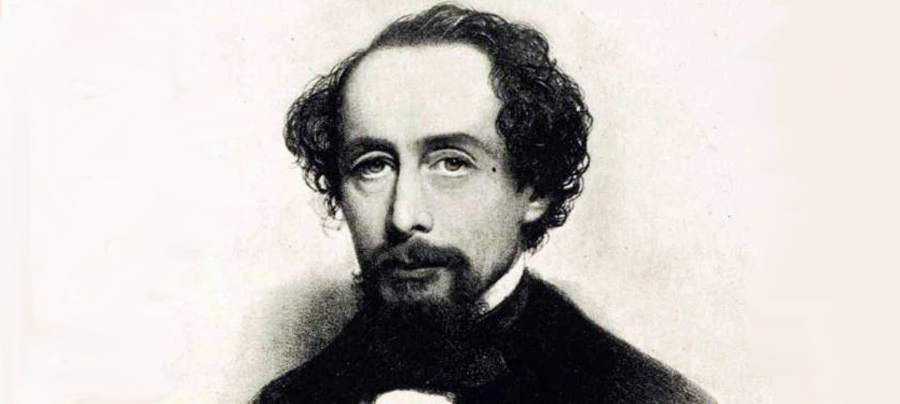
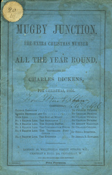

The Signal-Man is a horror/mystery story by Charles Dickens, first published as part of the Mugby Junction collection in the 1866 Christmas edition of All the Year Round.
The railway signal-man of the title tells the narrator of an apparition that has been haunting him. Each spectral appearance precedes a tragic event on the railway on which the signalman works. The signalman's work is at a signal-box in a deep cutting near a tunnel entrance on a lonely stretch of the railway line, and he controls the movements of passing trains. When there is danger, his fellow signalmen alert him by telegraph and alarms. Three times, he receives phantom warnings of danger when his bell rings in a fashion that only he can hear. Each warning is followed by the appearance of the spectre, and then by a terrible accident.
The first accident involves a terrible collision between two trains in the tunnel. Dickens may have based this incident on the Clayton Tunnel crash that occurred in 1861, five years before he wrote the story. Readers in 1866 would have been familiar with this major disaster. The second warning involves the mysterious death of a young woman on a passing train. The final warning is a premonition of the signalman's own death.
The Signal-Man was adapted by Andrew Davies as the BBC's Ghost Story for Christmas for 1976, with Denholm Elliott as the principal character. This production was filmed on the Severn Valley Railway; a fake signal box was erected in the cutting on the Kidderminster side of Bewdley Tunnel, and the interiors were filmed in Highley signal box. There is an anachronism in this production; Elliott as the principal character whistles "Tit Willow", a song from the Gilbert and Sullivan operetta The Mikado, which was not written until 1885.
In 1979, English composer Andrew Lloyd Webber attempted to adapt the short story into a one-act musical, with the intent of having it performed as a double-bill alongside his monodrama Tell Me on a Sunday. However, the project was abandoned when Lloyd Webber found the subject matter too gloomy for a musical. Later, in the early 2000s, Lloyd Webber made a second attempt at adapting The Signal-Man for the stage, this time as an operatic piece for the English National Opera company. This production did not materalize either, due to Lloyd Webber finding the source material unsuitable for the company. The material that Lloyd Webber had already written for the opera was instead combined with his 2004 musical adaptation of the Wilkie Collins novel The Woman in White. The show's prologue and finale are freely adapted from Dickens' original short story.
In the United States, the story was adapted for radio for the Columbia Workshop (23 January 1937), The Weird Circle (as "The Thing in the Tunnel", 1945), Lights Out (24 August 1946), Hall of Fantasy (10 July 1950), Suspense (4 November 1956) and Beyond Midnight (as "The Signalman", 1970) radio shows.
The Canadian Broadcasting Corporation also adapted the story for their CBC Radio drama programme Nightfall (17 December 1982).
In 2015, Brazilian filmmaker Daniel Augusto adapted the short story into a 15 minute short film starring Fernando Teixeira in the title role. The film was shown as part of the Short Cuts program during the Toronto International Film Festival.
In India, this story has been transformed into a Hindi drama on radio by Vividh Bharati Services.